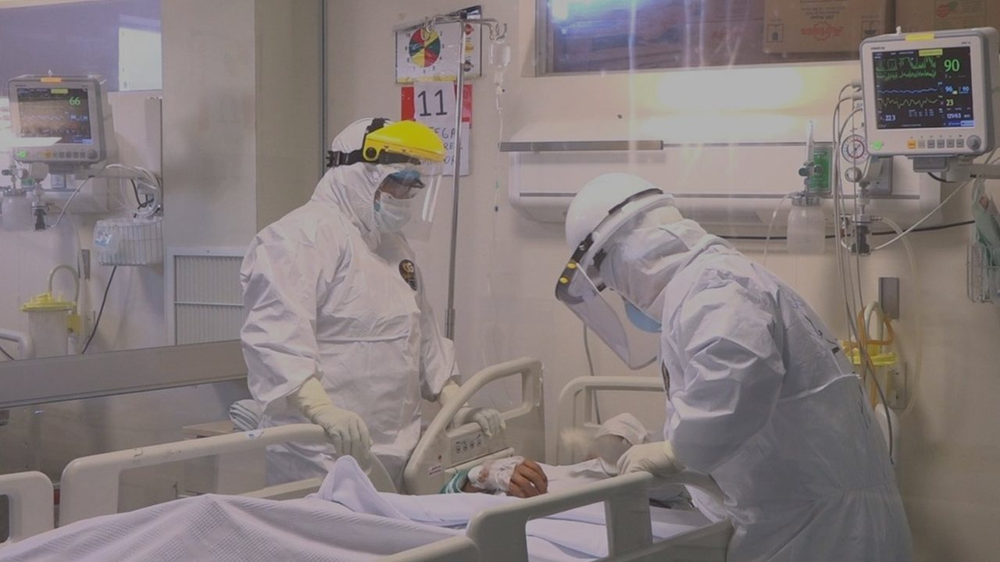

Primero, Fujimori suspende viaje a Colombia. En contexto, keiko Fujimori suspendió su viaje a Colombia ante la emergencia por lluvias e inundaciones en Piura.





Primero, Fujimori suspende viaje a Colombia. En contexto, keiko Fujimori suspendió su viaje a Colombia ante la emergencia por lluvias e inundaciones en Piura.
También, El trabajo y la obesidad. En contexto, el entorno laboral puede favorecer el desarrollo de la obesidad y agravar sus consecuencias.
También, Detectan larvas de dengue en Chimbote. En contexto, en el sector San Pedro de Chimbote se encontraron larvas del zancudo del dengue en 185 casas.
Primero, Balean una camioneta en la Costa Verde. En contexto, delincuentes armados interceptaron y balearon una camioneta en la Costa Verde, a la altura de La Perla.
También, Advierten sobre recalentar comida varias veces. En contexto, recalentar repetidamente la comida puede elevar el riesgo de intoxicaciones digestivas, advirtió un infectólogo.
También, Consejos para consumir más fibra. En contexto, una experta comparte consejos para aumentar el consumo de fibra sin comer más ni subir de peso.
Primero, Argentina refuerza la respuesta ante la influenza aviar. En contexto, argentina inició un ciclo de seminarios intersectoriales sobre influenza aviar. El objetivo es fortalecer la prevención, la vigilancia y la respuesta.
También, Honduras busca frenar la resistencia a los antimicrobianos. En contexto, en Honduras, distintos sectores unen esfuerzos para prevenir la resistencia a los antimicrobianos. La iniciativa busca proteger la salud de la población.
También, Palmeiras y Estudiantes se enfrentan por la Libertadores. En contexto, palmeiras y Estudiantes de La Plata se preparan para un duelo de Copa Libertadores. El pronóstico anticipa un partido exigente.
Cada edición dura menos de dos minutos. En la web tienes el resumen de cada historia y el enlace directo al medio original para leerla completa.
Conoce Olfatecho →